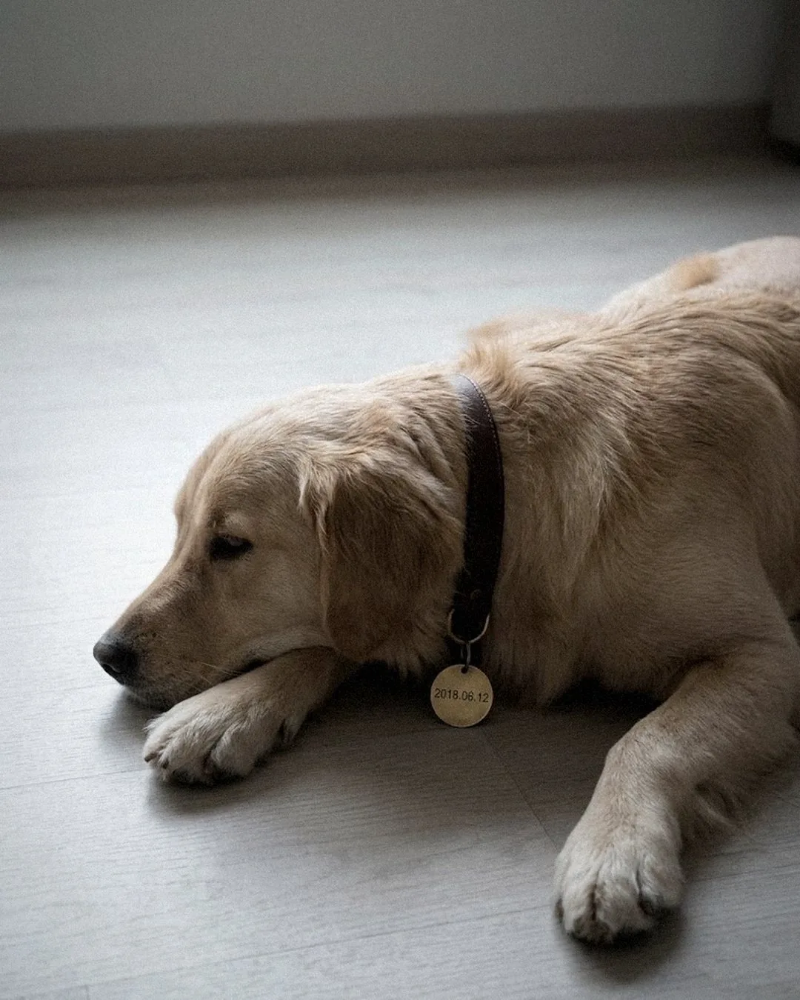

未命名档案室
选一个案子
一部手机，一个人，几句说法。
翻完，再决定信谁。
本故事纯属虚构。人物、地点、事件均无原型。
09:41
85%
案卷
09:41
10月28日 星期三

相册回忆
小乖 2018.06.12
信息
现在
138 4471 0620
临川这边的话带到了。她说那天她在站外等，不用进站。
输入 4 位密码
想不出来？
09:41
信鸽
信鸽
09:41
信鸽
‹
对话
未发送
09:41
相册
全部照片
最近删除
2 项
IMG_0519
10/27 23:14
IMG_0520
10/27 23:14
同一分钟删除 · 已清除，不可恢复
私密相册
加密 · 2 张
09:41
‹
照片
09:41
记录
记录
09:41
信息
短信与通知
09:41
结案
矛盾举证
09:41
信鸽
相册
记录
信息
结案
私密相册
需要 4 位密码。
确认
取消